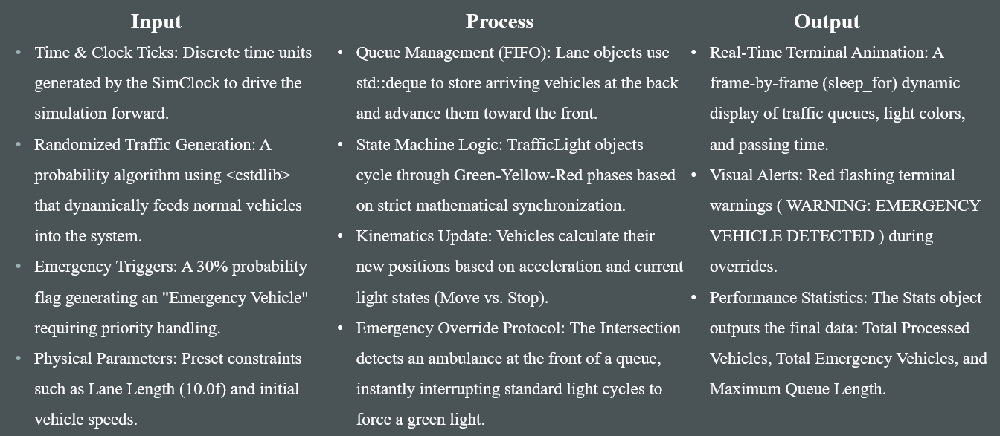
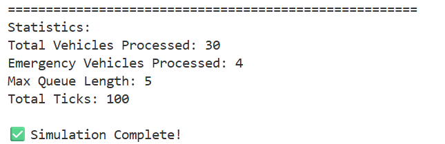

Overview项目概述
A discrete-time C++ simulation of a two-way signalized intersection, built to study congestion and how emergency vehicles can clear traffic. An object-oriented engine of seven classes models vehicle kinematics, traffic-light state machines, lane queues, and an adaptive emergency-vehicle override — rendering a live terminal animation and an end-of-run statistics report.一个用 C++ 编写的离散时间双向信号灯路口模拟器，用于研究交通拥堵以及紧急车辆如何疏导交通。由七个类组成的面向对象引擎对车辆运动学、交通灯状态机、车道队列以及紧急车辆优先放行机制进行建模，并实时渲染终端动画和运行结束后的统计报告。
The Problem问题背景
Congestion and accidents at intersections are increasingly common, and it is neither safe nor practical to experiment on real roads. We built a simulator as a safe sandbox to observe intersection dynamics and test tricky scenarios — in particular, how an emergency vehicle can be given priority to pass through heavy traffic without delay.路口的拥堵和事故日益频繁，而在真实道路上做实验既不安全也不现实。我们因此构建了一个模拟器作为安全的“沙盒”，用以观察路口动态并测试各种棘手场景——尤其是如何让紧急车辆获得优先权、在繁忙车流中畅通无阻。
How It Works工作原理
A central clock drives the whole simulation forward in discrete time steps ("ticks"):一个中央时钟以离散的时间步（“tick”）推动整个模拟：
- Simulator.run() loops until the clock reaches its limit, each tick updating the intersection, collecting statistics, and advancing the clock.Simulator.run() 持续循环直到时钟到达上限，每个 tick 都会更新路口、收集统计数据并推进时钟。
- Every Vehicle has simple kinematics — it accelerates and moves forward based on its distance to the intersection and the current light state.每辆车都有简单的运动学：它会根据与路口的距离和当前灯色加速并前进。
- Traffic lights are state machines (GREEN → YELLOW → RED), and the Intersection keeps the two directions synchronized.交通灯是状态机（绿 → 黄 → 红），由路口类保持两个方向同步。
- When an emergency vehicle reaches the front of a lane, the Intersection halts the normal timer and forces that lane green (and the opposite red) until it clears.当紧急车辆到达车道最前端时，路口会暂停常规计时，强制该车道为绿灯（对向为红灯），直到其通过。
- Vehicles spawn probabilistically via the C++ <random> library; the program renders a live terminal animation and prints a final report (vehicles processed, emergencies handled, max queue length, total ticks).车辆按概率生成（使用 C++ <random> 库）；程序实时渲染终端动画，并打印最终报告（处理的车辆数、紧急车辆数、最大队列长度、总 tick 数）。
Object-Oriented Design面向对象设计
The engine is organised into seven single-responsibility classes built around composition:引擎由七个职责单一的类组成，并围绕“组合”关系构建：
- Vehicle, TrafficLight, Lane, Intersection, SimClock, Stats, and Simulator each own one clear job.Vehicle、TrafficLight、Lane、Intersection、SimClock、Stats 和 Simulator 各司其职。
- An Intersection is composed of two Lane and two TrafficLight objects; each Lane holds a pointer to its light so it can read state without duplicating data.一个 Intersection 由两个 Lane 和两个 TrafficLight 组合而成；每个 Lane 持有指向其交通灯的指针，从而无需重复存储即可读取灯的状态。
- Lane queues are modelled with a std::deque of vehicles, and a Stats module records throughput and the maximum queue length.车道队列用 std::deque 建模，Stats 模块记录通行量和最大队列长度。
Collaboration & Results协作与成果
Built by a three-person team using an iterative process — requirements, then pseudocode, then implementation — all version-controlled in a shared GitHub repository with descriptive commits. A sample 100-tick run processed 30 vehicles and 4 emergency vehicles with a peak queue length of 5. Planned extensions include an SFML 2-D graphical interface, a four-way intersection with turn lanes, and crosswalk logic.由三人团队采用迭代流程完成——先确定需求，再编写伪代码，最后实现——全程在共享的 GitHub 仓库中进行版本管理并附带清晰的提交说明。一次 100-tick 的示例运行处理了 30 辆车和 4 辆紧急车辆，峰值队列长度为 5。后续计划包括基于 SFML 的二维图形界面、带转向车道的四向路口，以及人行横道逻辑。
Gallery图库
Click any image to enlarge.点击任意图片可放大。


